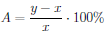
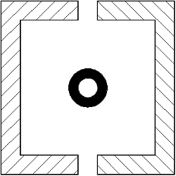
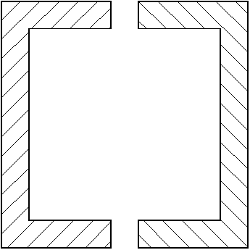
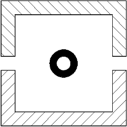
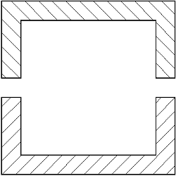

Klasyczny pionowy test klamrowy jest przedstawiony na rys.1. Pozwala on zmierzyć pionową forię asocjacyjną oraz pionową anizejkonię.
Podczas badania pacjent ma możliwość niezależnego:
Wynik badania jest podawany w postaci dwóch liczb oddzielonych ukośnikiem. Pierwsza wartość (wyrażona w mierze kątowej) dotyczy pionowej forii, a druga (w procentach) dotyczy pionowej anizejkonii.
Wielkość forii α jest obliczana z poniższego równania na podstawie przesunięcia prawej klamry x i odległości od monitora l.
Wielkość anizejkonii A jest obliczana z poniższego równania na podstawie początkowej wysokości klamry x, końcowej wielkości klamry y oraz odległości od monitora l.

Pionowy test klamrowy bez centralnego bodźca do fuzji przedstawiono na rysunku 2. Stanowi on samodzielną modyfikację klasycznego pionowego testu klamrowego, dlatego brak jest danych na temat interpretacji otrzymywanego wyniku.
Podczas badania pacjent ma możliwość niezależnego przesuwania prawej klamry analogicznie jak w klasycznym pionowym teście klamrowym.
Wynik badania jest obliczany i prezentowany jak poprzednio.
Klasyczny poziomy test klamrowy jest przedstawiony na rysunku 3. Pozwala on zmierzyć poziomą forię asocjacyjną oraz poziomą anizejkonię.
Podczas badania pacjent ma możliwość niezależnego:
Wynik badania jest podawany w postaci dwóch liczb oddzielonych ukośnikiem. Pierwsza wartość (wyrażona w mierze kątowej) dotyczy poziomej forii, a druga (w procentach) dotyczy poziomej anizejkonii.
Wielkość forii α jest obliczana z poniższego równania na podstawie przesunięcia dolnej klamry x i odległości od monitora l.
Wielkość anizejkonii A jest obliczana z poniższego równania na podstawie początkowej wysokości klamry x, końcowej wielkości klamry y oraz odległości od monitora l.
Poziomy test klamrowy bez centralnego bodźca do fuzji przedstawiono na rysunku 4. Stanowi on samodzielną modyfikację klasycznego poziomego testu klamrowego, dlatego brak jest danych na temat interpretacji otrzymywanego wyniku.
Podczas badania pacjent ma możliwość niezależnego przesuwania dolnej klamry analogicznie jak w klasycznym poziomym teście klamrowym.
Wynik badania jest obliczany i prezentowany jak poprzednio.



